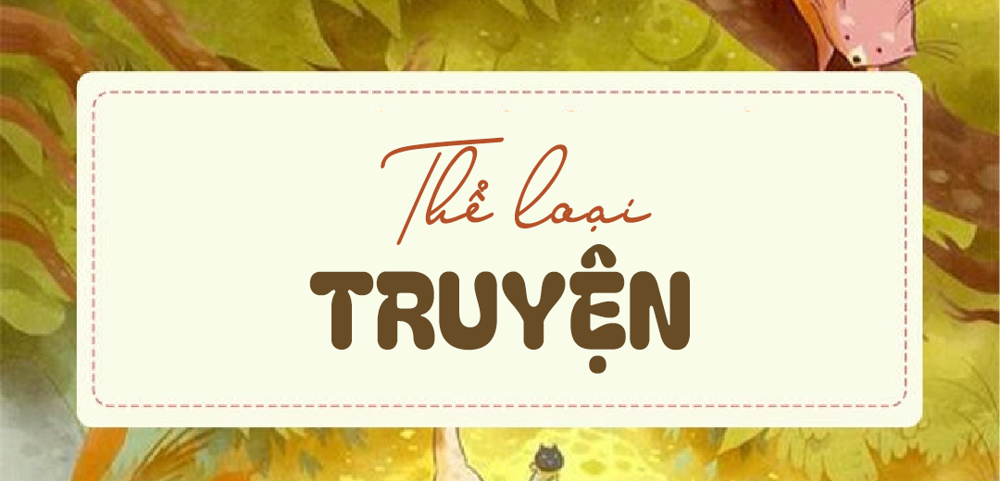

Đặc trưng thể loại Truyện
Trong chương trình Ngữ văn THPT, các bạn học sinh sẽ tiếp xúc với thể loại truyện với nhiều tiểu loại khác nhau: truyện ngắn, tiểu thuyết,… Điều này đòi hỏi các bạn không chỉ cần nắm vững những tri thức lí thuyết mà còn cần áp dụng được trong quá trình làm bài Nghị luận văn học.
1. Kiến thức trọng tâm thể loại truyện
1. Cốt truyện: Gồm một chuỗi sự kiện được sắp xếp theo một trật tự nhất định.
Chức năng:
• Phản ánh tính cách, số phận nhân vật, mối quan hệ giữa các nhân vật
• Bộc lộ các xung đột, mâu thuẫn của con người, tái hiện bức tranh đời sống.
2. Sự kiện: Là những sự việc việc xảy ra trong đời sống được khắc họa, những hành động, việc làm của nhân vật.
Tác dụng:
• Bộc lộ bản chất nhân vật, thay đổi cảm xúc, nhận thức, số phận nhân vật.
• Phản ánh hiện thực đời sống một cách toàn diện.
3. Tình huống truyện: Là những sự kiện, hoàn cảnh, tình thế đặc biệt chứa đựng những mâu thuẫn, éo le, nghịch lý trong cuộc sống thường ngày của nhân vật.
Tác dụng:
• Tạo hoàn cảnh cho nhân vật buộc phải có sự lựa chọn, thể hiện rõ tư tưởng, tâm lý, hành động của nhân vật.
• Thúc đẩy cốt truyện phát triển, tạo kịch tính.
• Bộc lộ rõ chủ đề, tư tưởng của tác phẩm.
2. Phân tích cách áp dụng
Đề bài: Phân tích tình huống truyện của truyện ngắn “Chữ người tử tù”
(1) Trong “Chữ người tử tù”, Nguyễn Tuân đã khắc họa một tình huống có tính chất éo le khi đặt nhân vật Huấn Cao và viên quản ngục vào chốn ngục tù tối tăm, tạo nên cuộc gặp gỡ kì lạ của họ. Bởi trên bình diện xã hội, họ hoàn toàn đối lập với nhau. Một người là tên “đại nghịch”, cầm đầu cuộc nổi loạn nay bị bắt giam, đang chờ ngày ra pháp trường; một người là quản ngục, kẻ đại diện cho trật tự xã hội đương thời. Nhưng cả hai nhân vật này đều là những con người có tâm hồn nghệ sĩ, trên bình diện nghệ thuật, họ là tri âm, tri kỉ với nhau. (2) Chính tình huống độc đáo này đã làm nổi bật vẻ đẹp của hình tượng Huấn Cao: một con người tài hoa, nghệ sĩ, có khí phách hiên ngang và cái tâm trong sáng. Đặc biệt tình huống đã làm sáng tỏ “tấm lòng biệt nhỡn liên tài” của viên quản ngục, đồng thời cũng thể hiện sâu sắc chủ đề của tác phẩm. (3) Đó chính là quan niệm về cái đẹp và cái thiện: “cái tài” – “cái tâm” vốn không thể tách rời, cái đẹp không thể chung sống lẫn lộn với cái xấu, cái ác. (4) Tình huống truyện giúp cho cốt truyện phát triển từ cuộc gặp gỡ đặc biệt đến sự biệt đãi của quản ngục cho Huấn Cao, cảnh cho chữ. Từ sự hiểu nhầm của Huấn Cao trước tấm lòng của quản ngục đến cảnh cho chữ đã thể hiện sự trân trọng của Huấn Cao khi nhận ra tấm lòng chân thành từ quản ngục – một người biết quý trọng người tài, yêu cái đẹp.
(1) Chỉ ra tình huống mang tính chất éo le, kịch tính.
(2) Phân tích tác dụng của tình huống trong bộc lộ tính cách Huấn Cao và viên quản ngục
(3) Phân tích tác dụng của tình huống trong bộc lộ chủ đề.
(4) Chỉ ra cốt truyện & tác dụng của tình huống trong thúc đẩy cốt truyện phát triển.
3. Kiến thức trọng tâm thể loại Truyện
4. Nhân vật: là đối tượng có hình dáng, cử chỉ, hành động, ngôn ngữ, cảm xúc, suy nghĩ,… được nhà văn khắc họa trong tác phẩm.
Chức năng:
• Khái quát những tính cách, hiện thực cuộc sống
• Thể hiện quan niệm của nhà văn về cuộc đời.
Các biện pháp xây dựng nhân vật:
• Miêu tả nhân vật qua ngôn ngữ, lời nói của nhân vật trong tác phẩm
• Miêu tả nhân vật qua hành động, việc làm của nhân vật
• Miêu tả nhân vật qua biểu hiện nội tâm
4. Phân tích cách áp dụng
Đề bài: Phân tích nhân vật Chí Phèo sau đêm gặp Thị Nở
Đoạn văn miêu tả tâm trạng Chí Phèo sau đêm “gặp gỡ” thị Nở cho thấy Nam Cao là bậc thầy về nghệ thuật phân tích tâm lí nhân vật. Sáng hôm ấy, tiếng chim hót, tiếng người đi chợ cười nói,… mà Chí nghe được khiến hắn thấy “chao ôi là buồn!”. Bởi những tiếng vọng của đời thường khiến hắn nhớ lại ước mơ bình dị của ngày xưa về “một gia đình nho nhỏ, chồng cuốc mướn cày thuê, vợ dệt vải”. (1) Đến lúc này, Chí mới cảm thấy “đã tới cái dốc bên kia cuộc đời”, và hắn lo, hắn sợ “đói rét và ốm đau, là cô độc, cái này còn đúng sợ hơn đói rét và ốm đau”. Chí Phèo vừa húp cháo hành vừa trìu mến nhìn thị Nở, rồi hắn vẩn vơ nghĩ gần nghĩ xa. Lần đầu hắn được cảm nhận thế nào là yêu thương bởi trước đây hắn chỉ đâm chém và cướp giật chứ đâu được ai cho không cái gì. (2) Chính tình thương ấy khiến Chí Phèo bỗng thấy “thèm lương thiện” và bảo thị Nở: “Hay là mình sang đây ở với tớ một nhà cho vui”. Câu nói ấy là một câu nói “tình tứ”, đã biểu lộ chân tình khao khát muốn được làm người, được hoàn lương của Chí. Có nghe hắn chửi, có nhìn thấy hắn rạch mặt, ăn vạ, có mục kích hắn say rượu vác dao đi đâm người… thì ta mới thấy xúc động vô cùng trước những khao khát, bình dị ấy của con người bất hạnh ấy!… Thế nhưng, cây cầu đưa hắn trở về với cuộc sống lương thiện là Thị đi mất, Chí rơi vào một bi kịch tinh thần đau đớn, quằn quại. Hắn lại uống nhưng “càng uống càng tỉnh ra” và thấm thía nỗi đau vô hạn của thân phận mình: quyền được sống lương thiện đã bị cự tuyệt. Câu nói đầy khắc khoải “… Ai cho tao lương thiện?”, “Tao không thể là người lương thiện nữa.” khi đến nhà Bá Kiến là tiếng kêu thương tuyệt vọng của một kiếp người đau khổ (3) Chí Phèo “văng dao tới” giết Bá Kiến rồi tự sát. Ý thức thân phận khiến Chí hiểu mình không thể sống kiểu lưu manh, không thể làm quỷ dữ, sống như thú vật được nữa. (4) Có thể nói, với cảm quan hiện thực sắc sảo đặc biệt, Nam Cao đã vạch ra mâu thuẫn giai cấp gay gắt ở nông thôn và tình trạng lưu manh hóa của một bộ phận nông dân trong xã hội thực dân nửa phong kiến.
(1) Phân tích cách Nam Cao miêu tả Chí Phèo qua diễn biến nội tâm
(2) Phân tích cách Nam Cao miêu tả Chí Phèo qua lời nói
(3) Phân tích cách Nam Cao miêu tả Chí Phèo qua hành động
(4) Chỉ ra hiện thực cuộc sống gợi ra từ nhân vật
6. Phân tích cách áp dụng
Đề bài: Phân tích ngôi kể của đoạn trích “Xuân tóc đỏ cứu quốc”
(1) Trong đoạn trích “Xuân tóc đỏ cứu quốc”, ngôi kể thứ ba đã giúp người kể chuyện dẫn dắt người đọc theo từng tình tiết câu chuyện nhưng và thể hiện được giọng điệu châm biếm, đả kích của nhà văn. Điển hình như ở đầu đoạn trích, hình tượng nhân vật Xuân Tóc Đỏ không xuất hiện trực tiếp mà xuất hiện một cách gián tiếp qua lời kể của cô Tuyết. Nhà văn nhấn mạnh đến sự đại bại trong trận quần vợt của bà Văn Minh và Xuân Tóc Đỏ hiện lên như vị “cứu tinh” đặc biệt. Trong xã hội mà mọi gian xảo trở thành điều thường nhật thì Xuân Tóc Đỏ là một kẻ tài giỏi, là niềm hi vọng có thể cứu vớt được danh dự của một gia đình. (2) Đối với đoạn trích, ngôi kể này đã khắc họa lên sự thối nát của xã hội Đương thời thông qua các nhân vật. Đó là sự đểu cáng của Xuân, sự hèn nhát của các quan chứng nhà nước. Ngôi kể thứ ba mở rộng khả năng của tác giả để thay đổi góc nhìn và chuyển đổi giữa các nhân vật. Trong đoạn trích, nhà văn đã cho độc giả thấy được diễn biến tâm trạng bực tức của Vua Xiêm khi tuyển thủ của mình sắp thua, sự lo lắng hớt hải của quan chức nhà nước cho đến sự khó hiểu của ông Văn Minh. Cũng từ ngôi kể này, Vũ Trọng Phụng đã phê phán, vạch trần những vấn đề xã hội như “Cũ mới tranh nhau”, “Á – Âu xáo trộn” khiến cuộc sống lúc bấy giờ giống như một mớ hỗn độn tạp nham mà tác giả cho rằng đó là “cái xã hội đen tối, thối nát”.
(1) Chỉ ra tác dụng của ngôi kể trong bộc lộ quan điểm của tác giả
(2) Chỉ ra tác dụng của ngôi kể trong bộc lộ khách quan hiện thực, tính cách nhân vật.